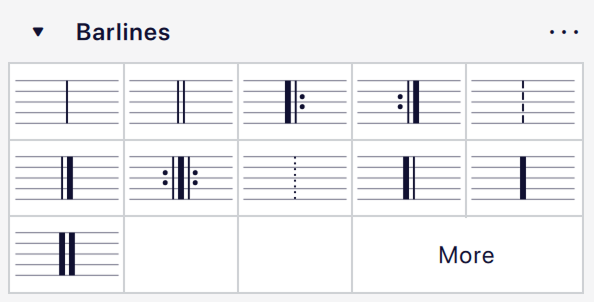

Barlines
The Barlines palette contains a full range of common barlines.

Adding double and other special barlines
Changing barline type for all staves
- Select one or more barlines in a staff.
- Click on the desired barline in the palette.
Alternatively, you can drag a barline from the palette onto a barline in the score.
Changes are applied automatically to all barlines at the same point in the score.
Changing barline type for a single staff
- Select one or more barlines in the score.
- Hold Ctrl (Mac: Cmd) then click on the desired barline in the palette.
Alternatively, you can hold Ctrl (Mac: Cmd) and drag a barline from the palette onto a barline in the score.
Only selected barlines are affected when using this modifier.
Adding mid-measure barlines
- Select a note or rest (or several, as a list selection).
- Click on a barline in the palette.
This will add a barline marking after each selected note. The barline is for visual purposes and does not factor into any measure operations.
If you wish to divide a measure, inserting a real barline in the process, see Splitting a measure.
Changing barline length
Here we are concerned with the vertical extension of barlines in order to link staves together, or their reduction to create partial barlines.
Extending all barlines in a staff
- Select a barline on the 'starting' (topmost) staff.
- Do any of the following: * Drag the end handle downwards until it meets the destination staff (this method is the best for extending barlines through multiple staves). * Select the edit handle and press Down. * Check the Span to next staff box in the Barlines section of the Properties panel, then click Set as staff default.
- Repeat if required for subsequent staves.
The barline snaps into place, and all other barlines in that staff follow.
Extending selected barlines in a staff
- Select one or more barlines (and their counterparts in the staves below if there are more than two staffs to join).
- Check Span to next staff in the Barlines section of the Properties panel.
Creating partial barlines
Partial barlines can be created by adjusting Span from and Span to in the Barlines section of the Properties panel.
Creating barlines between staves only (Mensurstrich)
See Working with Mensurstrich.
Barline properties
You can edit properties specific to barlines in the Barlines section of the Properties panel:
- Style: The barline type (single, double, dashed, final, etc.).
- Span to next staff: If checked, the barline will be extended to reach the next staff down.
- Span from: The vertical position of the top of the barline.
- Span to: The vertical position of the bottom of the barline.
The Span from setting is an offset relative to the top line of the staff. As with most other vertical positioning settings in MuseScore Studio, positive values move down and negative values move up.
The Span to setting works differently depending on whether Span to next staff is checked. If unchecked, this is an offset relative to the bottom line of the staff. If checked, the barline will be extended down to match the position of the top of a default barline on the staff below (i.e. either the top staff line or, in the case of a one-line staff, 2sp above the staff line). Exceptionally, in this situation, the offset works in reverse: positive values move up and negative values move down.
One-line staves present one further complication: the default barline, which is drawn when both the Span from and Span to settings are 0, is drawn from 2sp above the line to 2sp below. The span offsets are however still relative to the (only) staff line and, if Span to next staff is unchecked, changing one will also apply the other (even if it is 0).
Finally, the unit for these offsets is in all cases the half space.
The Set as staff default button will apply all the Span settings of the currently selected barline to all barlines on the staff.
The Span presets buttons apply certain presets to the barline:

When applied, the presets will set Span from and Span to to specific values and, except for Default, will disable Span to next stave.
Barline style
Selected properties for all barlines in the score can be changed in Format -> Style -> Barlines:

- Show repeat barline tips: Adds 'wings' above and below repeat barlines.
- Barline at start of single staff: Whether a system containing only one staff should have an initial system barline.
- Barline at start of multiple staves: Whether a system containing more than one stave should have an initial system barline.
- Scale barlines to staff size: Whether the thickness of barlines should be scaled on resized staves.
- Mask barlines when intersecting text: Whether barlines should be masked when text crosses over them.
- Thin barline thickness: The thickness of a 'normal' thin barline.
- Thick barline thickness: The thickness of a thick barline (for example, the thick portion of a repeat barline or final barline).
- Thick barline distance: The distance between the thick and thin portions of a repeat or final barline.
- Double barline thickness: The thickness of the lines in a double barline.
- Double barline distance: The distance between the two lines in a double barline.
- Repeat barline to dots distance: The distance between the innermost line of a repeat barline and its dots.
- Use double barlines before key signatures / time signatures: Lets you choose if and when double barlines are automatically shown before key or time signatures.
- Left (start) repeat signs contains the following options:
- Show barline before key and time signatures changes: When turned on, adds an additional barline before key and time signatures that are before a left repeat sign. You can also choose if this is a double barline or not.
The thickness and distance settings are among those which may change automatically when changing a score's music font, if Style -> Score -> Automatically load style settings based on font is checked (which it is by default).
See also
- Fixed measure widths for a workaround to ensure barlines are aligned vertically between systems.
- Repeat signs